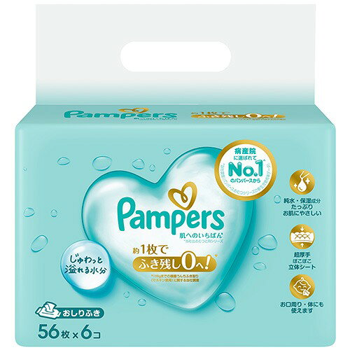
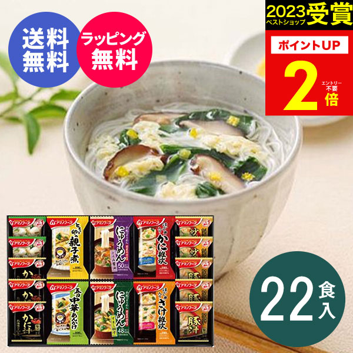
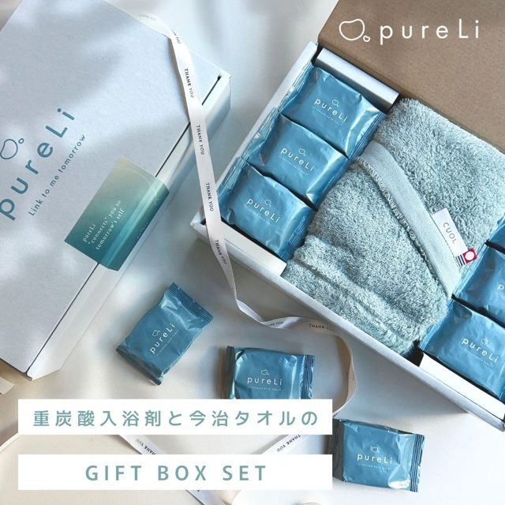
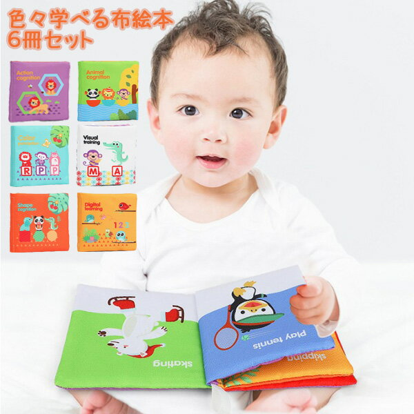
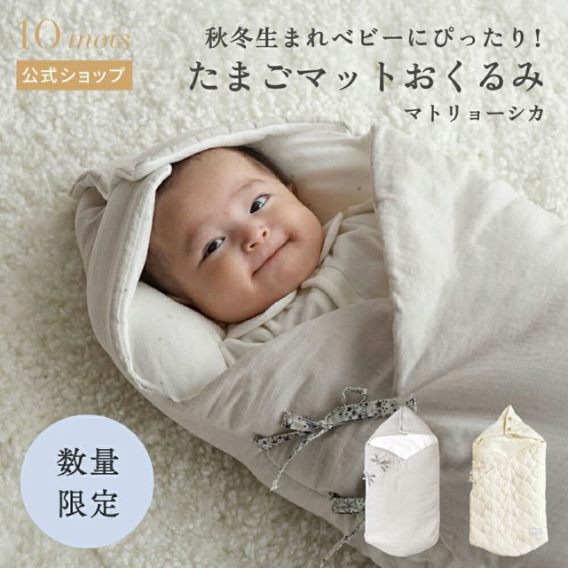
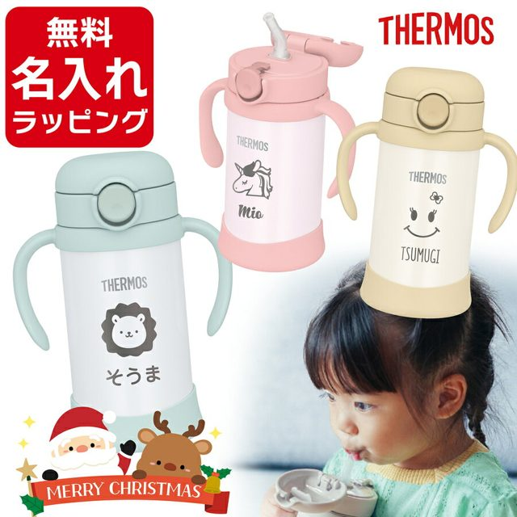
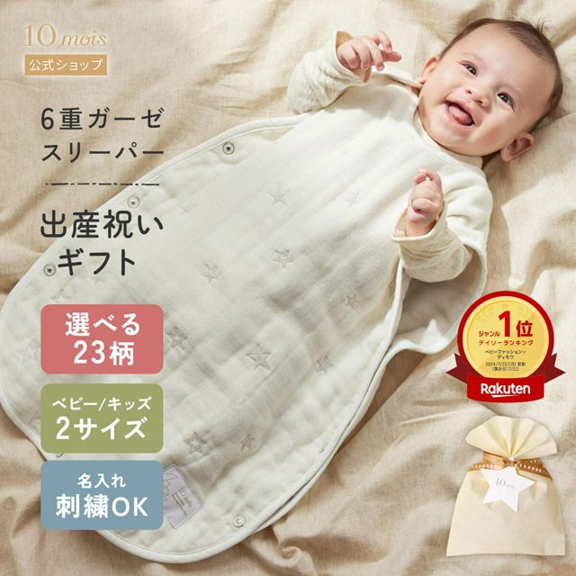

「気持ちはうれしいけれど、物が増えるのは少し困る」。出産祝いでは、そんな本音も少なくありません。だからこそ最近は、見た目のかわいさだけでなく、生活の中でちゃんと使えるものが選ばれています。
ここでは、1人目にも2人目にも贈りやすく、特に喜ばれやすいギフトをランキングでまとめました。相手の好みが分からないときほど、実用性の高いものが頼りになります。
嬉しかった出産祝い TOP15
1位 ギフトカード・商品券
2人目で評価が最も伸びるカテゴリです。リンベル調査では、商品券・ギフトカードは1人目30.0%（5位）から2人目35.8%（2位）へ上昇しました。Xの集計でも、ギフトカードは嬉しい10件に対して困った0件。「1人目は現物が嬉しかったけど、二人目はギフトカードがとても嬉しい」という、1人目と2人目の対比そのものが本人の言葉で語られています。
必要なものを自分で選べるため、失敗が少ない贈り物です。特に2人目以降は、服やおもちゃが揃っている家庭でも使い道を選べます。具体名では西松屋のギフトカード、アカチャンホンポの商品券、Amazonギフトカードが挙がりました。
注意点は、金額がそのまま伝わることです。メッセージカードを添えるのが定番の配慮で、目上・年上の親戚には「味気ない」と受け取られることがあるため、その場合は品物か15位のカタログギフトが無難です。相手が実際に使う店のカードかどうかも、選ぶ前に確認してください。
2位 おしりふき（厚手タイプを、量で）
毎日使う消耗品は、家計の助けにもなります。おしりふきは今回の集計で、消耗品の中で唯一、困った側の具体投稿がゼロだった品目です。Xでは「出産祝いに貰って1番助かるのはおしり拭き」という明言や、車にダンボールで大量に持参した例が大きな反響を呼びました。おむつと違い銘柄へのこだわりが比較的緩く、新生児から上の子まで毎日確実に減っていきます。銘柄を指定する肯定意見では、パンパースの厚手タイプが良いという声がありました。肌に合わない場合に備え、無添加・低刺激系が無難です。

3位 食事系ギフト（冷凍スープ・フリーズドライ）
産後は食事の準備が負担になりがちです。冷凍で保存できるものや、家族で食べられるものが重宝されます。2人目育児では上の子の食事まで手が回らず、親の食事が後回しになります。Xの集計では嬉しい9件／困った0件で、Soup Stock Tokyoの冷凍スープが複数の受け取り投稿で名指しされ、「困ったらこれを送っておくれ」と他人へ推薦する形で語られていました。おもちゃいろ調査（ママ100人）でも「食事宅配・家事代行券」が嬉しかったものに入っています。
冷凍庫に空きがない家庭、アレルギーや授乳中の食材配慮が必要な場合は向きません。常温保存できるフリーズドライタイプなら冷凍庫問題を避けられます。


4位 現金
アンケートだけを見れば不動の1位です。リンベル調査では1人目48.0%・2人目以降49.8%。それでも当サイトの順位で4位に置くのは、現金には現金ならではの摩擦があるからです。「使い道に迷って長く手つかず」という声と、身内間で額の差（1万円と10万円など）が見えてしまうモヤモヤが、Xの集計で確認できました。弱点は「失礼かどうか」ではなく、手つかず化と比較可能性です。
渡すときは「ベビー用品に使ってね」「上の子のものも買ってあげて」など、使い道を一言添えるのが定番の配慮です。口座開設など目的とセットにする渡し方もあります。
5位 図書カード
Xの集計では嬉しい4件／困った0件。注目したいのは内訳で、4件のうち3件が2人目以降の受け取りで、全員が上の子を含むきょうだいの本に使っていました。「ベビー用品は揃っている家庭でも、本は不足する」という構造がそのまま出ています。価格帯は1,000〜5,000円で、本体に添えるプチギフト・同梱枠としても優秀です。
図書カード自体はアフィリエイト対象外のため、リンクは「カードで買える絵本の実例」として、絵本の実物ページに接続します。実物の絵本そのものを贈りたい場合は10位の節をどうぞ。

6位 ママ本人へのギフト（入浴剤・スキンケア・デカフェ・スイーツ）
赤ちゃん用品に限らず、産後の休憩時間に使える飲み物やスイーツも選択肢です。相手との距離感に合わせて選びます。リンベル調査で「ママをねぎらうアイテム」は1人目24.3%（7位）から2人目23.3%（5位）へ順位を上げました。GIFTFULのママ向け調査（100人）で嬉しかったものの上位は、お菓子・スイーツ、食べ物・グルメ、デカフェ飲料、入浴剤、スキンケアの順でした。Xの集計では嬉しい11件と多く、嬉しさの核は「赤ちゃんへの贈り物の中に、自分宛てがあった」という驚きでした。「長女の時はセルフネグレクト気味だったから、今回はスキンケアが嬉しい」という、2人目特有の声もあります。
注意点は2つ。使われるのは「育児が落ち着いてから」になりがち（1年後に開封した例が複数）なので、日持ちする物を選ぶこと。香りは控えめにすること。そして、授乳服・授乳ブラの一式は本人の状況と合わず困った側に入った、ママ向けでは目立つ失敗例です。授乳を前提にした実用品は避けてください。通常のコーヒー・アルコール・香りの強いものも、産後・授乳期に使えない困り例があります。

7位 紙おむつ（銘柄とサイズを「聞ける間柄」だけ）
へその緒屋の調査（育児中のママ・パパ100人）では「もらって嬉しかった」1位（5人に1人）でしたが、Xで評価を分けたのは銘柄とサイズでした。「何を使っているか聞いてくれた」うえで箱でもらったことが「拝むレベルでありがたかった」と語られる一方、新生児サイズはすぐサイズアウトして余り、すでにMサイズの子にSサイズが届いた失敗例もあります。銘柄が合わないと使えないため、聞けない間柄ではおむつ単体は選ばず、2位のおしりふきに寄せるのが鉄則です。贈るなら新生児サイズよりも、少し先に使えるS・Mサイズを箱で。
おむつケーキにする場合は、中身の銘柄が選べるタイプかどうかを確認してください。一枚ずつ輪ゴムで固定された巨大なものは「解体が面倒」「場所を取る」と不評で、困ったものの調査でも上位に入っています（GIFTFUL調査で3位・14%）。

8位 名入れの実用小物（スタイ・タオル・マグ）
Xの集計では、名入れへの言及10件がほぼ肯定でした。MARLMARLの名入れスタイは「色々頂いた中で1番嬉しかった」という声が複数あり、名前入りの今治ハンドタオル、THERMOSのストローマグ、兄弟ペアの名入れグラスも好例として挙がっています。「自分では買わない価格帯の実用品＋名前」という組み合わせが効くようです。2人目では、お下がりだらけの環境で「この子だけの物」になる点も大きいです。価格帯は3,000〜8,000円。
注意点もあります。使わなかった場合、名前入りは「手放せない枷」になります。服への名入れは「サイズアウトしても売れない」という否定意見が大きく出ています。判断軸はシンプルで、名入れはスタイ・タオル・マグなど“毎日使う小物”に限ることです。

9位 上の子へのプチギフト＋お揃い
2人目のお祝いでは、上の子への小さな贈り物が喜ばれることがあります。絵本や年齢に合うおもちゃが選びやすいです。ハッピー・ノートの調査では、2人目への贈り方として「上の子にも何かあげる」が約31.6%。受け取り側では、上の子向けの絵本や服が同梱されていたことに感動したという声が見られました。Xでは「プレゼントが自分宛でないと上の子が泣く」という体験談が大きな共感を集め、実家の便に長女向けの絵本と服が入っていた例も支持を集めています。
贈り方は、本体に1,000〜3,000円のプチギフトを同梱する形が中心です。本体より目立たせない分量感で。上の子の年齢・性別・好みの確認は必要です。本人に欲しいものを聞くと「1人目のサイズの服（お下がりで下の子にも着せるから）」という合理的な答えが返ってきた例もあり、上の子への服は実質2人目への投資にもなります。

10位 絵本（具体タイトルで選ぶ）
Xの集計では嬉しい3件と数は多くありませんが、支持は具体タイトルに集まっています。『おべんとうバス』、こぐまちゃん絵本セット、『ラヴ・ユー・フォーエバー』——最後の1冊は「中学生になった今も読み返す」と語られていて、年単位で残る数少ないカテゴリです。価格帯は1,500〜3,000円。
注意点は定番の重複リスクです。各家庭に揃いやすい有名タイトルより、少しひねった選書が安全です。音の出るタイプには「刺激が強い」という困り例があるため、静かな本が無難です。下のリンクは、総合ガイド記事でも接続している定番の1冊です。

11位 離乳食・時短グッズ（所有状況の確認が前提）
はらぺこベビーのママ調査では、離乳食グッズが嬉しかったものの上位でした。XでもBRUNOのブレンダーが複数の投稿で名指しされ、1人目のときに手作業だった人の2人目では「思っていたより遥かに楽だった」という声があります。
分岐条件は「すでに持っているか」の一点です。所有済みの家庭では「いらない」が率直な声でした。高性能すぎる機種は「使いこなす前に離乳食が終わった」という両義的な評価も大きな共感を集めています。確認できる間柄で贈るカテゴリです。手作り離乳食をするか分からない相手には、食器セット等の軽いものからにしてください。

12位 おくるみ・ブランケット（贈るなら理由のある1枚だけ）
Xの集計では嬉しい6件／困った・混合5件と、評価がはっきり割れるカテゴリです。肯定側は「機能」か「意匠・物語」に寄っていて、機能では10moisのたまごマットおくるみ（モロー反射対策で長く寝た）、意匠では絵画のような柄・干支柄・名入れ・手作りが挙がりました。2人目の反例として大切なのは、「1人目は何も残らなかったから、2人目は記念に残るものが欲しかった」という声です。2人目＝実用品一辺倒ではありません。
不評の中心は、複数枚の重複と、水通し（洗濯）の手間です。贈るなら「理由のある1枚だけ」に絞ってください。ガーゼケット・タオルも同じ洗い替え枠で、「保育園を考えると、洗えるガーゼやタオルは何枚あっても使う」「おしゃれすぎるものより、毎日洗えるものが結局残る」という声があります。

13位 実用品（ストローマグ・水筒・食器）
Xの集計では嬉しい3件／困った0件。「二人目は先輩母たちから実用品をもらったけど（ストローマグ、スケーターの水筒）アホほど使う」という声があり、名前入りのTHERMOSマグも好例でした。価格帯は2,000〜5,000円。地味ですが外さない、というのがこの順位の位置づけです。先輩ママからの贈り物という文脈が強いカテゴリでもあります。

14位 スリーパー
正直に書くと、この順位の裏付けは弱いです。根拠は10moisの自社調査で「嬉しかった」30%・1位という自社データが中心で、Xではカタログギフトで選ばれた使用報告が1件あるのみでした。素材の季節感（夏場に厚手は使えない等）も選び方を左右します。「候補として知っておく」程度に読んでください。裏付けの弱い順位を、強い順位と同じ顔で並べないことが、このランキングの約束です。

15位 カタログギフト
最後に、カタログギフトです。まず事実から。GIFTFULの調査（ママ100人）では、嬉しかったものの4位（24%）で、理由は「自分で選べる」「失敗がない」でした。贈る側の声でも「2人目で何がいいか分からないからカタログにした」という選択が実際に見られ、1万円台のコースを選んだ例もあります。
それでも当サイトの順位が15位なのは、受け取り側の声の量が決定的に違うからです。当サイトが集計した受け取り体験の具体投稿では、カタログギフトを受け取った側が品名を挙げて「嬉しかった」と語る投稿はほぼゼロでした。「選んで終わり」で、SNSに書く動機が生まれにくい——という媒体差は確かにあります。困った側の声も出ていません。ただ、それを差し引いても、カタログギフトは「もらって嬉しいもの」というより、贈る側が外さないための保険として機能している品目です。嬉しさの順位を付けるこのランキングでは、15位が正直な位置になります。
使うなら、ベビー用品が含まれる育児向けカタログか、有効期限が6か月以上のものを。産後すぐは選ぶ余裕がないため、期限の短いものは避けてください。投げやりに見える懸念には、メッセージを一言添えるのが定番です。

番外：ベビー服は「16位相当」
ベビー服は、アンケートでは嬉しかった上位の常連（アニヴェルセル調査で66.7%）です。ただし2人目では36.8%から26.3%へ下落し、Xの集計では嬉しい3件に対して困った3件＋転売3件と、評価が割れました。好み×サイズ×季節の3条件が全部揃えば最強、外せばメルカリ行きか「売るのも抵抗がある」宙吊りになります。当サイトの順位では16位相当として、ランキングの外に置きます。贈るなら、80cm以上・季節先取り・ベージュ等のシンプル系で、3条件が全部揃う相手にだけ。2人目が異性の場合は「お下がりで揃わない性別の服」として有効な選択肢になります。
予算別の選び方
| 予算 | 選びやすいもの | 向いている相手 |
|---|---|---|
| 3,000円前後 | 絵本、図書カード、おしりふき | 同僚・ママ友・ちょっとしたお祝い |
| 5,000円前後 | スープギフト、名入れスタイ、カタログギフト | 友人・親戚 |
| 10,000円前後 | ギフトカード、上質な実用品、複数アイテムの組み合わせ | 親しい友人・兄弟姉妹 |
| 20,000円以上 | 現金、複数アイテムの組み合わせ | 近い親族 |
迷ったときの基準
サイズを選ばない、好みを選びすぎない、すぐ使える。この3つを満たすと、贈る側も受け取る側も気が楽です。
出産祝いは、立派なものを選ぶより「今の生活が少し楽になるもの」を選ぶ方が喜ばれることがあります。特に2人目以降は、華やかさよりも実用性に寄せるのがおすすめです。
避けてほしいもの（調査で「困った」が確認できたもの）
- 大型育児用品（バウンサー、ベビーカー、ジャンパルー等）：Xの集計で肯定0件／困った4件。すでに持っていることと、置き場所が理由です。
- 新生児サイズの服・おむつ：サイズアウトが早すぎます。
- ノーブランドの安価なスタイ：「安く見える」ことが逆効果になった例があります。贈り物の価格は検索される時代です。
- 巨大なおむつケーキ：解体の手間と割高感が不評でした。
- 定番おもちゃ・大きなぬいぐるみの重複：「何個目か」がすべて。置き場所も問題になります。
- 授乳前提のママ用品一式：本人の状況と合わないと使われません。
ママの本音コメント
※以下3件は、口コミ・編集部ヒアリング・ギフト利用シーンをもとに再構成したコメントです。個別の取材ではありません。
美咲さん：食事系ギフトが助かった
「退院後は買い物に行く気力がなくて、スープや冷凍のおかずが本当に助かりました。赤ちゃん用品より先に、自分たちのごはんが切実でした。」
（3位の食事系ギフトに対応。Xの集計でも食事系は嬉しい9件／困った0件）
沙織さん：上の子にもあると空気が変わる
「赤ちゃんへのお祝いに、上の子用の絵本が一冊入っていたのが嬉しかったです。上の子が“自分もお祝いされた”って顔をしていました。」
（9位の上の子向けプチギフトに対応。ハッピー・ノート調査で贈り方の31.6%が実践）
奈央さん：洗い替えは裏切らない
「保育園を考えると、洗えるガーゼやタオルは何枚あっても使いました。おしゃれすぎるものより、毎日洗えるものが結局残ります。」
（12位のおくるみ・ブランケット節の「洗い替え」の話に対応）
まとめ
2人目の出産祝いは、1人目と発想を切り替えることが出発点です。
- データが示す移動は一貫しています。「モノ」から「選べる・消える・ママ本人へ」。
- 消耗品は、銘柄とサイズを確認できるかどうかで鉄板にも地雷にもなります。聞けないなら、おしりふき（厚手）かギフトカードが安全圏です。
- 服・おもちゃ・大型品は2人目では原則として避ける。贈るなら条件が全部そろう相手にだけ。
- 上の子へのプチギフトは、小さな額で満足度を大きく上げる、2人目ならではの一手です。
- カタログギフトは「外さない保険」としては有効でも、嬉しさの順位では15位。この線引きが、このランキングの正直さです。
詳しい選び方の全体像は「二人目の出産祝いは何が正解？」、贈る前の確認手順は「2人目の出産祝い、贈る前に確認したいこと」、消耗品の選び方は「出産祝いの消耗品は『おしりふき』と『おむつ』の2択」、予算の組み立ては「二人目の出産祝い、金額の相場はいくら？」もあわせてどうぞ。
この記事について
広告・PRについて
※この記事にはアフィリエイト広告（PR）が含まれます。記事内のリンクからご購入いただくと、当サイトに紹介料が支払われる場合があります。なお、商品の並び順や評価は広告の有無ではなく、下記の調査根拠に基づいて決めています。
価格は各リンク先でご確認ください（本記事で金額に触れた商品の確認価格：マイプレシャス エルフコース税込5,500円・BRUNO マルチスティックブレンダー税込7,700円は2026年11月18日再確認、その他は2026年11月14日〜16日時点）。
調査根拠・出典
根拠は、公開アンケート調査（リンベル400名、GIFTFUL100人、へその緒屋100人、ハッピー・ノート 他）と、X（旧Twitter）上の受け取り・贈り体験の具体投稿 約170件の集計（2026年11月調査）です。順位は、この集計で付いた順位をそのまま使っています。
調査データの出典：リンベル、GIFTFUL、へその緒屋、はらぺこベビー、ハッピー・ノート、おもちゃいろ各調査、およびX上の体験談集計（2026年11月）。
編集部より：カタログギフトの順位について
ひとつ、正直に書いておきます。カタログギフトは、このランキングでは15位です。以前の本記事では「迷ったときの逃げ道」として3位に置いていましたが、受け取り側が品名を挙げて「嬉しかった」と語る声の量に照らすと、それは順位の水増しでした。贈る側にとって便利な選択肢であることと、もらって嬉しかったものの上位であることは、別の話です。理由の詳細は、15位の節に書いたとおりです。